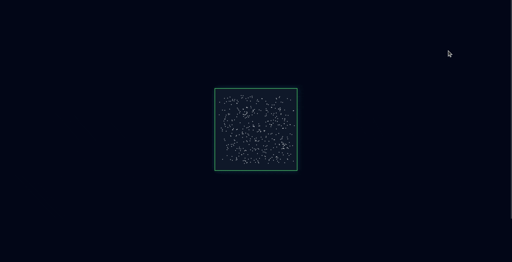

Nuit de l'Info 2025
Événement

Contexte du projet
La Nuit de l’Info est un challenge national organisé dans de nombreux IUT et écoles d’informatique. Les étudiants, répartis en équipes, disposent d’une nuit complète pour concevoir et développer une application web répondant à un sujet donné.
Lors de l’édition 2025 organisée à l’IUT Montpellier-Sète, notre équipe de quatre étudiants devait créer un site web permettant de présenter la NIRD et de sensibiliser les étudiants à ses principes de manière interactive et ludique.
Le sujet étant volontairement ouvert, nous avions une grande liberté dans la conception du site. Nous avons choisi de développer une application web composée de plusieurs mini-jeux et activités interactives, afin de rendre l’apprentissage plus engageant pour les utilisateurs.
Pour la réalisation technique, nous avons utilisé HTML et CSS pour la structure et le design du site, ainsi que JavaScript pour implémenter les interactions et la logique des mini-jeux.
Contribution personnelle
Au sein de l’équipe, j’ai participé à différentes étapes du développement du site.
J’ai notamment contribué à la conception générale du site, en participant à la réflexion sur la structure des pages et l’organisation de la navigation afin de proposer une expérience claire et intuitive pour l’utilisateur.
J’ai également travaillé sur le développement de certaines fonctionnalités interactives en JavaScript, notamment des mini-jeux permettant aux utilisateurs d’apprendre les principes de la NIRD de manière ludique. Ce travail impliquait la gestion des événements utilisateurs, la manipulation du DOM ainsi que l’implémentation de la logique de jeu côté client.
Enfin, j’ai participé aux tests et ajustements du site afin de vérifier le bon fonctionnement des différentes activités et d’améliorer l’expérience utilisateur avant la fin du challenge.
Ce que j’ai appris
Cette expérience m’a permis de développer plusieurs compétences importantes liées au développement informatique.
Sur le plan technique, j’ai renforcé mes compétences en développement web avec JavaScript, notamment dans la gestion des interactions utilisateurs et la manipulation du DOM. Le développement de mini-jeux m’a également amené à structurer davantage mon code et à adopter des bonnes pratiques de programmation, ce qui correspond aux exigences liées à la conception et à la qualité d’une application.
Le projet m’a également sensibilisé à l’importance de concevoir une interface claire et accessible, afin de proposer une expérience agréable pour les utilisateurs du site.
Au-delà des aspects techniques, la Nuit de l’Info a été une expérience très formatrice en matière de travail en équipe et de gestion de projet dans un contexte contraint. Le temps limité nous a obligés à nous organiser rapidement, répartir les tâches et adapter nos objectifs pour parvenir à produire un résultat fonctionnel avant la fin de la nuit.
Cette expérience m’a ainsi permis de mieux comprendre l’importance de la communication, de la collaboration et de l’adaptation dans un projet informatique, compétences essentielles dans un environnement professionnel.
Traces du projet
Visiter le site de la Nuit de l'Info
